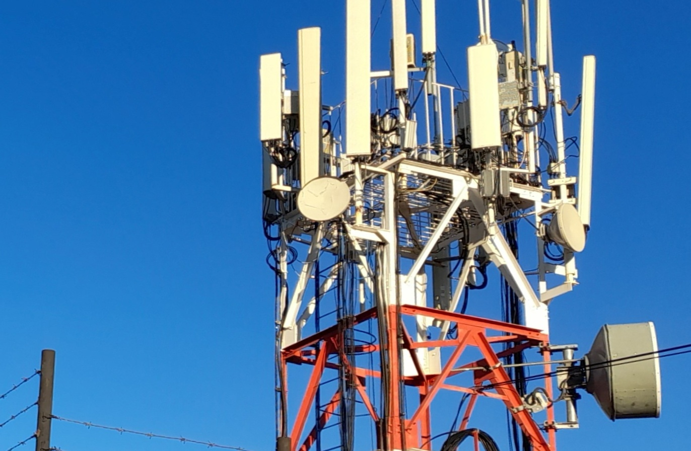

Index:Kern Security: WissenswertesZusammenarbeit Angebot Kontakt Impressum |
|
Motto: "Risiken minimieren bedeutet Sicherheit maximieren". Sicherheit kann auch definiert werden als: "...das Vorhanden sein von Integrität, Verbindlichkeit, Verfügbarkeit und Vertraulichkeit in einem geplanten Ausmaß." Quelle: Verfahren zur Risikoanalyse – Institut für Informatik der Universität Zürich. Sicherheit gewährleisten und Risiken managen ist nicht besonders schwierig, der Teufel aber steckt im Detail. Daher sollte eine Analyse (und leider auch eine periodische Überprüfung der Analyse) nicht vergessen werden. Wer oder was bin ich? Ich bin ein Analytiker; befasse mich hauptsächlich mit Analysen (und alles, was sich daraus ergibt. Dennoch habe ich einen handwerklichen Hintergrund. Ihre Zeit ist knapp, ich mache es so kurz wie möglich: Ich verwende Listen. |
Die wichtigsten Punkten für mich: Vertrauen und Verschwiegenheit. Das eine geht nicht ohne die andere einher, und andersherum. Ich arbeite mit "Sicherheit". Bitte denken Sie daran: Es kann keine "Sicherheit" ohne Vertrauen und ohne Verschwiegenheit existieren. Zusätzlich versuche ich, maximal unauffällig zu arbeiten. Das gilt auch für das Anbringen von HW und SW. Wichtig: Sie müssen, als Auftraggeber, ganz sicher sein, dass Sie über Ihre Daten, und zwar sämtliche Daten, die volle Kontrolle behalten (spätestens am Ende der Arbeiten). Und diese Kontrolle darf sonst niemand haben. Eine gute Zusammenarbeit setzt voraus, dass wir, Sie und ich, im Vorfeld klar definieren, wie diese Kontrolle (spricht Vertrauen) in Ihren Händen wandert und bleibt. So entsteht Vertrauen. |
Was kann ich für Sie machen?
|
Hardware
Software / Datensicherheit:
|
 |
Training bezüglich Datensicherheit (Inhouse bei Ihnen)
|
Beachten Sie bitte, dass auch "ad hoc" Training, speziell an
Ihre Firma zugeschnitten, erstellt werden können: Fragen
Sie einfach nach, zusammen erstellen wir das optimale Training
für Ihre "Mannschaft".
Ich setze verstärkt (oft und sehr gerne) Check-Listen ein: Was
sich für die Luftfahrt bewährt hat, kann so gut wie überall
eingesetzt werden.
Check-Listen sind einfach und zuverlässig. Einfachheit und Zuverlässigkeit ergibt Sicherheit!
| Bitte ein Erstkontakt nur über Email vorzunehmen: Ich habe keine Empfangsdame, die ein Risiko darstellen könnte. Meine Telefonnummer (geschäftlich) ist meinen Kunden reserviert, sonst niemandem. Warum? Sicherheit, Vertrauen, Verschwiegenheit. E-Mail: okkams.r@gmail.com Telefon: (Mobil und nur für Kunden) Blog: https://kern-sec.blogspot.com/ |